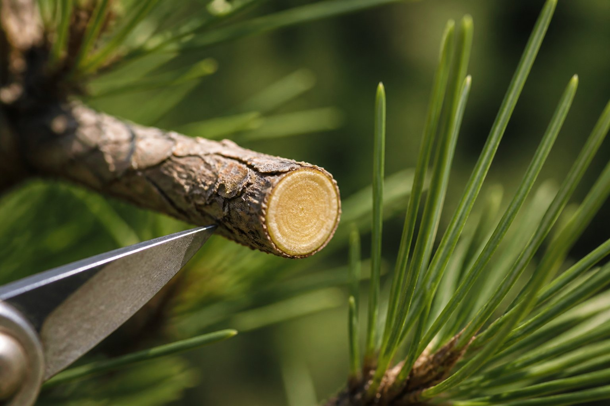
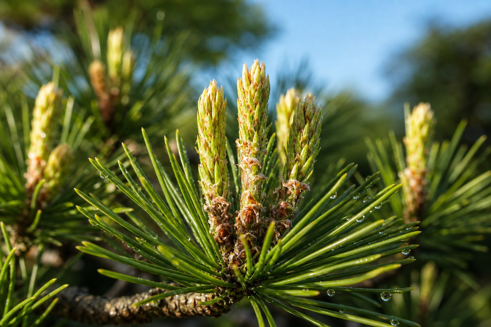
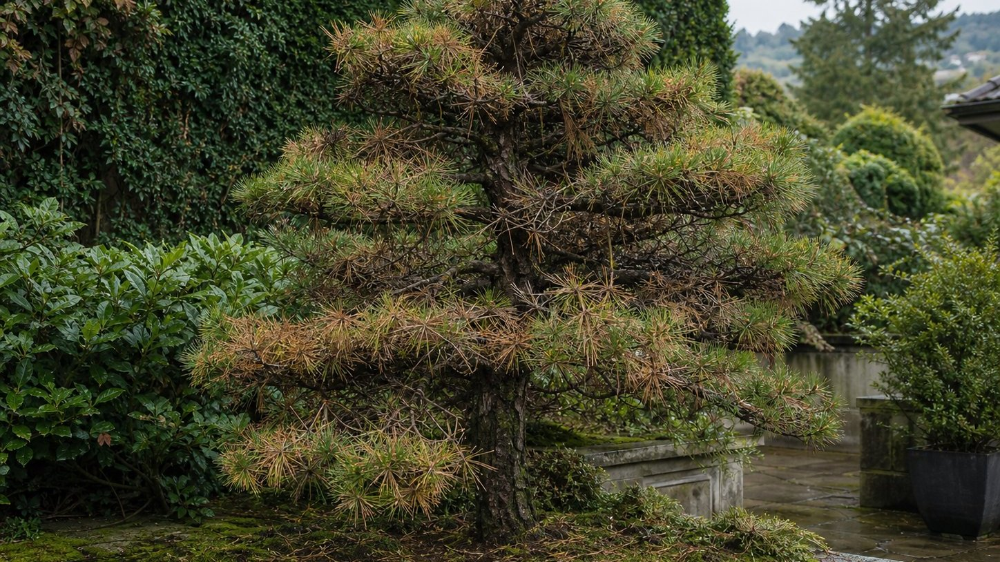

Why Viktor cuts with topiary scissors
Clean cuts, less tearing and more control than a hedge trimmer.
Read articleFive English mirror articles explain Viktor's craft: tools, crown energy, pine candles, roots and climate stress in Swiss premium gardens.

Clean cuts, less tearing and more control than a hedge trimmer.
Read article
Light, air and energy distribution explained in simple language.
Read article
How new pine shoots guide the next year of shape.
Read article
Water, air, pH and root health as the foundation of tree architecture.
Read article
Heat, dry summers and heavy rain make early assessment more valuable.
Read articleSend a photo of the problem area. Viktor will tell you honestly whether and how the tree can be saved.